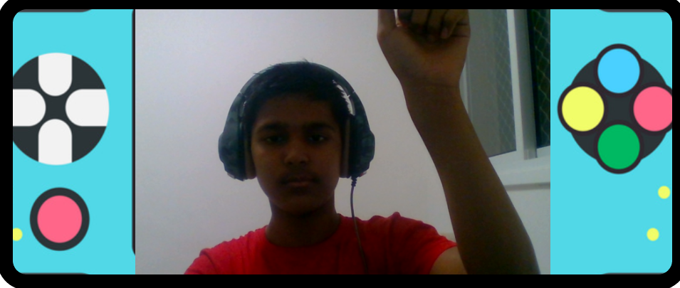
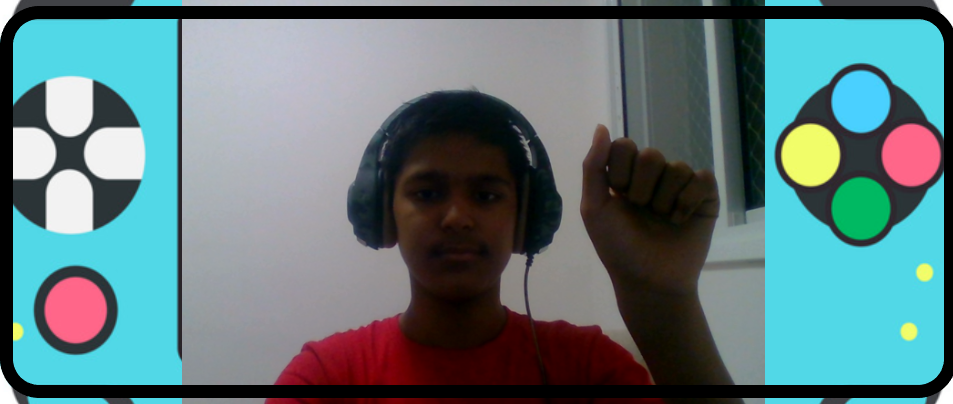

1.First keep your laptop screen straight
2.Move yourself approximately 3-4 feet away from the laptop
3.Move your right wrist in an ascending and decending manner, a red dot should appear on your right
wrist
4.Now press the play button, and again move yourself 3-4 feet away from laptop
5.The red paddel is your paddel, that will move as per the movement of your right wrist

